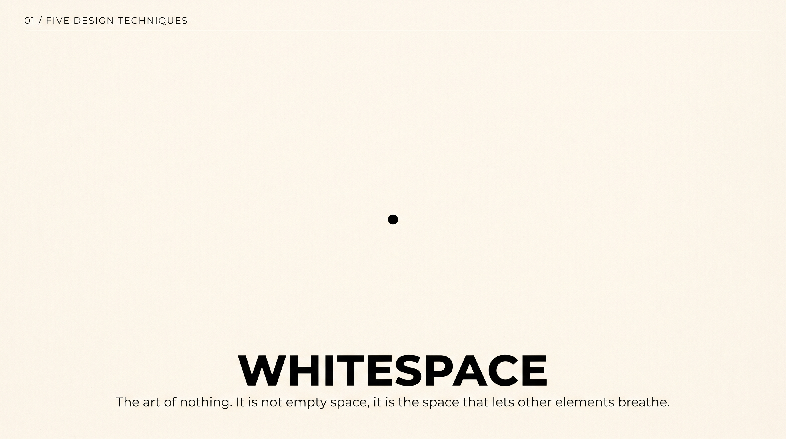
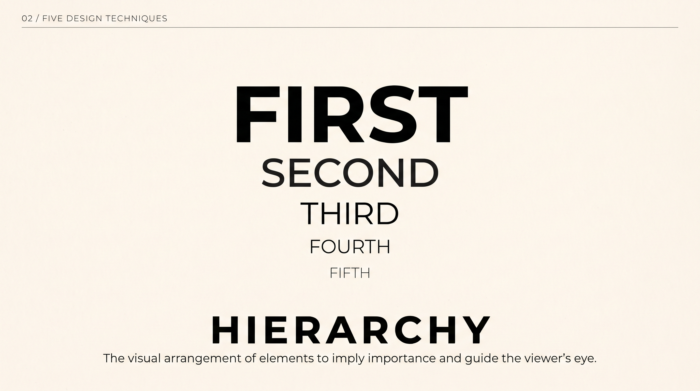
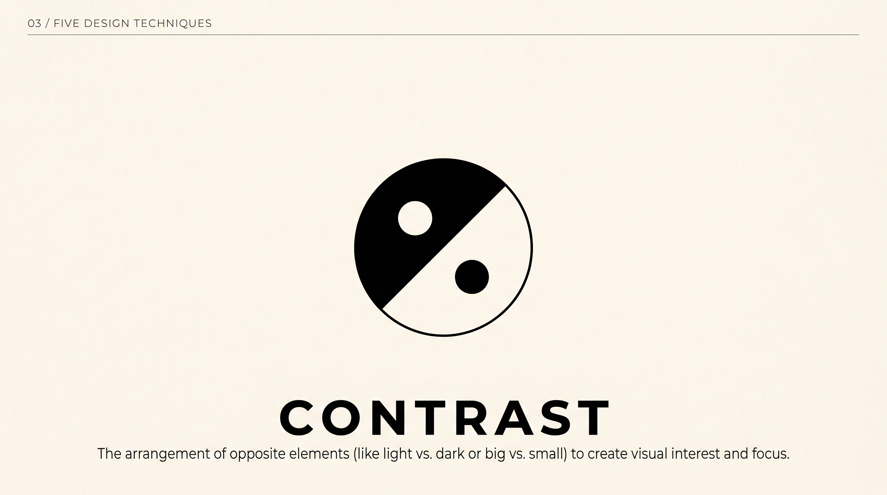
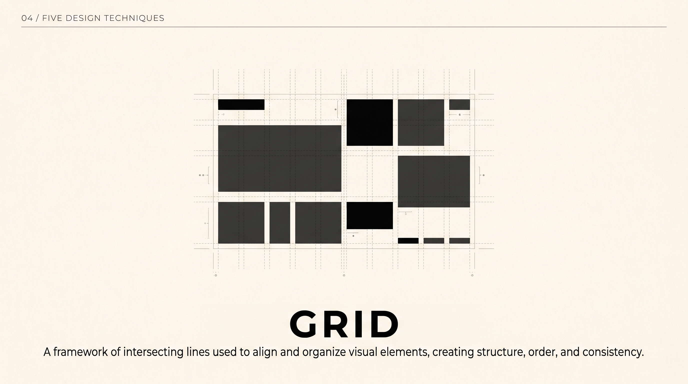
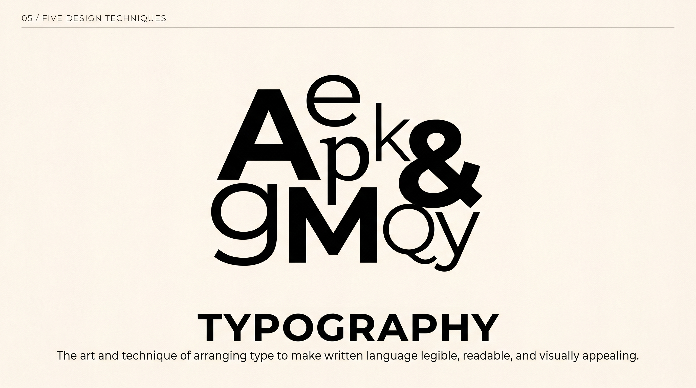

5 Essential Graphic Design Techniques
1. Start with Generous Whitespace
Beginners often treat empty space on a canvas like a gap that needs to be filled, which quickly leads to overcrowded posters. Giving text and visual elements wide outer margins and breathing room reduces eye strain and immediately makes a layout look calmer and more professional. Whenever I start a new layout, I set strict margins first before placing a single word on the page.

2. Build Visual Hierarchy Through Scale and Weight
If every piece of text on a graphic is the same size, the viewer will not know where to look first. By making your main headline significantly larger and bolder than your subheadings and body details, you control the exact order in which people read your information. Strong hierarchy ensures your main message lands within the first two seconds of someone glancing at your design.

3. Limit Your Color Palette for High Contrast
Using too many bright colors at once creates visual noise and makes text difficult to read from a distance. Sticking to a minimal monochrome base—such as deep charcoal and off-white—paired with a single accent color keeps the mood cohesive and sharp. High contrast between background and text is one of the fastest ways to make any layout accessible and readable.

4. Snap Elements to an Invisible Grid
Placing text boxes and images by eye almost always leaves subtle misalignments that make a design feel unfinished. Turning on gridlines and snapping the edges of your headlines, paragraphs, and photos to a shared vertical axis creates instant visual order. Even complex publication spreads feel balanced when every element shares a consistent alignment line.

5. Pair Only Two Complementary Fonts
Mixing three or four decorative fonts in one project makes a design look chaotic and distracting. A reliable rule is to pair one bold display or sans-serif font for headlines with one clean, easy-to-read font for body paragraphs. This simple constraint keeps your typography consistent across multi-page documents, infographics, and event announcements.
